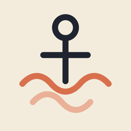
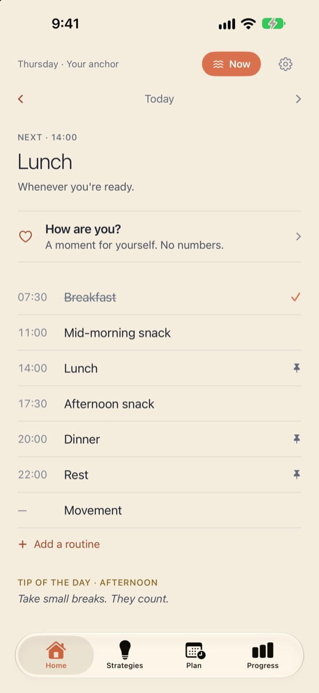
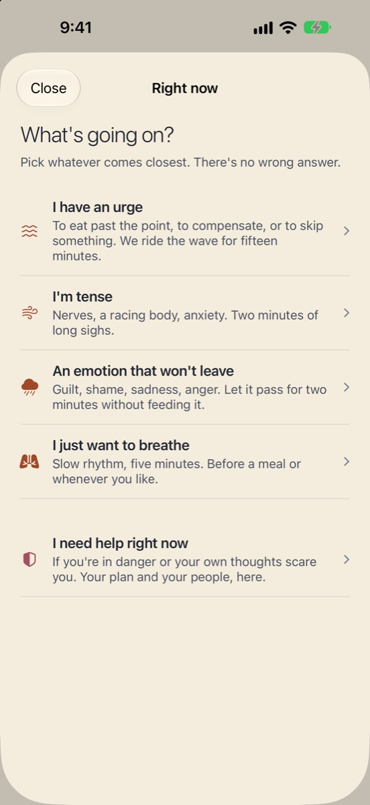
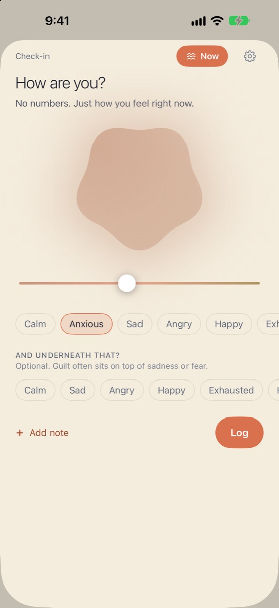
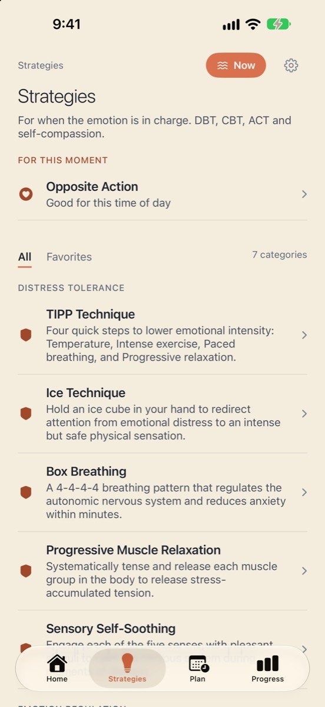

Seize Apps · iOS
Anchor
Anchor acompaña a personas que se recuperan de un trastorno de la conducta alimentaria. Rutinas que sostienen —comidas, descanso, movimiento— confirmadas con un toque; una sola puerta, Ahora, para el momento difícil: surfear el impulso, respirar con guía, dejar pasar una emoción o abrir tu plan de seguridad. Sin calorías, sin peso, sin rachas. Nunca.
Descargar en la App StoreAnchor no es un producto sanitario y no sustituye al tratamiento profesional. Si estás en peligro o tus propios pensamientos te asustan, llama al número de emergencias de tu zona.




Qué hace
Una sola cosa, bien hecha.
Rutinas, no reglas
Comidas, descanso y movimiento como bloques del día. Confirma con un toque; si un día no sale como estaba previsto, no pasa nada, y Anchor lo dice.
Una puerta para el momento difícil
Surf del impulso con un acompañante de quince minutos, respiración guiada sin retenciones, «déjalo pasar» para una emoción fuerte y un plan de seguridad con tu gente y los teléfonos de ayuda de tu región, a dos toques.
Sin números
Un registro emocional sin puntuaciones, estrategias basadas en DBT, TCC, ACT y autocompasión con su evidencia a la vista, y el progreso como la forma de tu semana, no como una nota.
Privacidad
Tuyo, no nuestro.
Todo lo que introduces se queda en tu dispositivo y en tu propio iCloud privado. Apple Health es opcional y de solo lectura (sueño, actividad), nunca peso ni nutrición, y nunca sale del teléfono. Sin analítica, sin anuncios, sin chat de IA.
Publicada en la App Store por Sendoa Sola · Seize Apps.